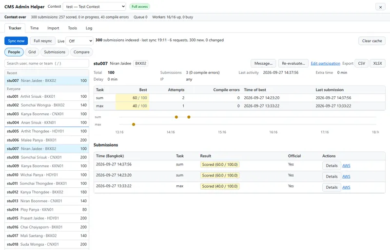
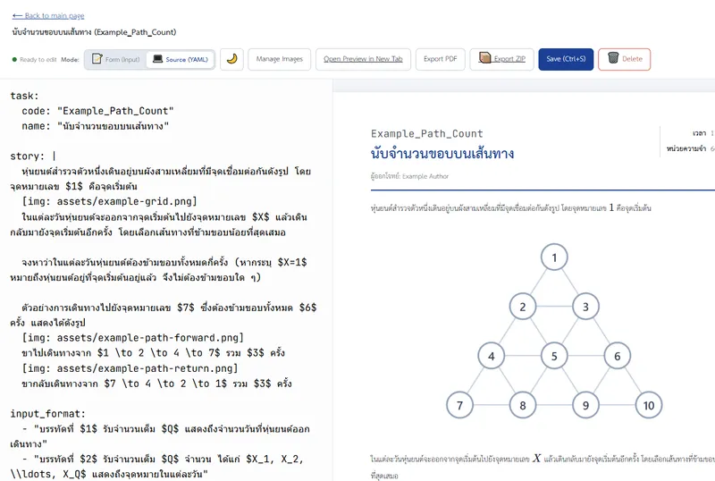

Things I've Built
no matches found

CMS Admin Helper
Chrome & Firefox Extension
Contest-day tools for the CMS admin site: contestant tracker, bulk import, Bangkok time
TypeScript
Browser Extension

TaskMaker
Problem Studio for RYWCC
Write olympiad problems in YAML, preview live, export print-ready PDFs
TypeScript
Docker
PostgreSQL